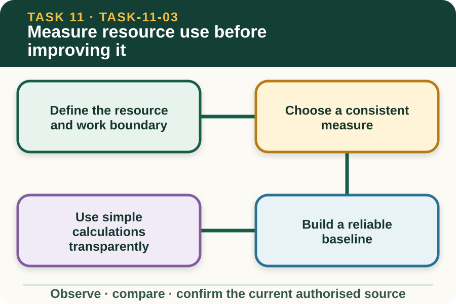

Learning purpose
Collect comparable data and identify a realistic efficiency opportunity.
Task 11 · Lesson 3 of 4
Collect comparable data and identify a realistic efficiency opportunity.
Learning purpose
Collect comparable data and identify a realistic efficiency opportunity.
Success criteria
Learning boundary
Supplementary learning and formative practice only. Current RTO assessment, local procedures and authorised supervision control real work.

Resources can include water, energy, fuel, materials, stock, time, infrastructure and consumables. Before measuring, clearly define which resource, task, work area and reporting period the record covers.
A number from the whole property cannot automatically describe one work activity. Clear boundaries make the data useful and prevent a claimed improvement from being caused by an unrelated change elsewhere.
Resource use can be recorded as a total, a count or a normalised figure such as litres per cleaned crate or kilowatt-hours per operating day. The measure should match the decision and use units that can be checked.
Follow the workplace's authorised measuring method and instrument instructions. The site can rehearse arithmetic with fictional data but does not direct access to meters, plant or controlled work areas.
A baseline describes current use under known conditions before a change is introduced. One unusual day may not represent normal work, so record workload, weather, equipment status and other conditions that could explain variation.
Comparable entries use the same boundary, units and method. If any of these change, note it so the apparent trend is not mistaken for a real efficiency improvement.
Totals, differences, averages, percentages and ratios can reveal patterns when the inputs are trustworthy. Show the source values, units and calculation so another person can repeat the check.
Normalising by output can make comparisons fairer. Lower total use is not automatically more efficient if far less work was completed, and higher total use may be reasonable if output increased substantially.
Fictional worked example
Observed evidence: A fictional wash-area record dated 1–5 June 2027 shows 4,800 L used for 120 reusable crates in the baseline period and 4,200 L for 120 crates after a supervisor-approved workflow change. Decision and reason: Arlo calculates 40 L per crate before and 35 L per crate after, a reduction of 5 L per crate, but does not claim the change caused the result from one comparison alone. Safe action: He checks that the task boundary, crate count and recording method match and reports one missing weather note. Result: The supervisor requests another comparable period before deciding whether to retain the change. Next check or record: Arlo records the method limitation and the agreed monitoring period.
A high-use point may arise from task design, rework, waiting, leaks, damaged materials, inconsistent setup or changing workload. The record can show where to investigate but does not prove a cause by itself.
Use questions and observations to test the pattern with the supervisor. An improvement should address a supported cause, remain within the work role and avoid shifting cost or environmental impact to another part of the system.
An efficiency change needs a measure, baseline, target or expected direction, review period and quality or safety guardrail. Saving a resource is not an improvement if product quality falls, work is repeated or another environmental pathway worsens.
File the record through the workplace's current system and discuss results with the supervisor. A website graph is learning support only and does not replace authorised environmental or business documentation.
Formative practice
Each option explains the consequence. These answers save only on this device.
Written application
Apply and keep a learning record
Calculate totals and one per-output ratio from a supplied dataset, mark any comparability gap and draft a supervisor-reviewed improvement question. Do not access real meters or equipment.
Learning record: A supplementary-learning baseline table, calculation trail and controlled improvement proposal.
Lesson responses and the activity are formative learning only. Formal sufficiency and competence remain with the current RTO process.
Source basis: AHCWRK211 Release 1 requirements to identify, measure, record and file resource use and seek improvements with a supervisor; NESA Sustainability focus-area resource-efficiency concepts; authorised teacher-posted sustainability notes.